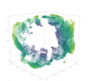

Alexander Stromberger
Software Engineer at Alturos Destinations and Software Engineering student at TU Wien.
Research interests: mathematical optimization, distributed systems, programming languages
Linkedin
@alexanderstromberger
Github
@stromberger
Mail
a@st.fyi
Work
Optimizing caching strategies for video streaming services using methods of operations research (bachelor thesis)
Builds on the results of "Optimal Content Placement for a Large-Scale VoD System" by Applegate et al.. Github Repo